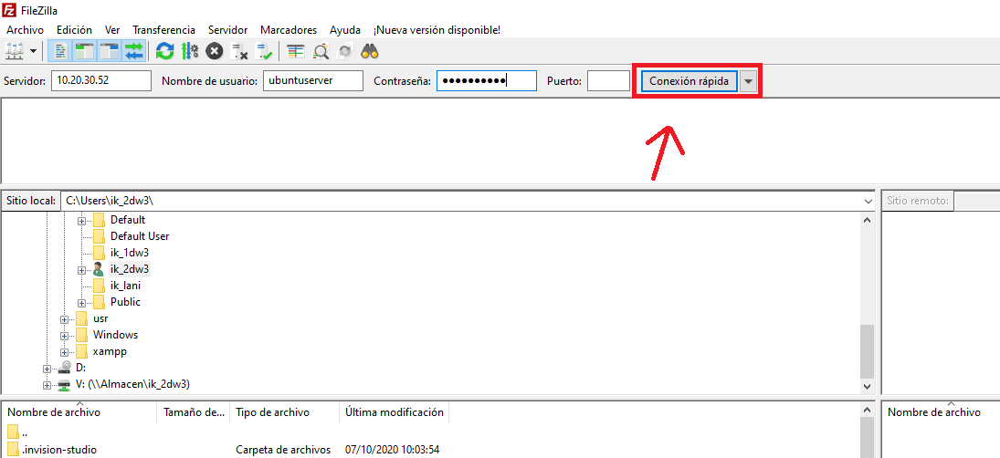
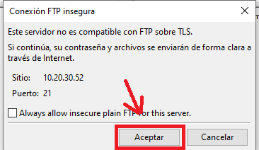
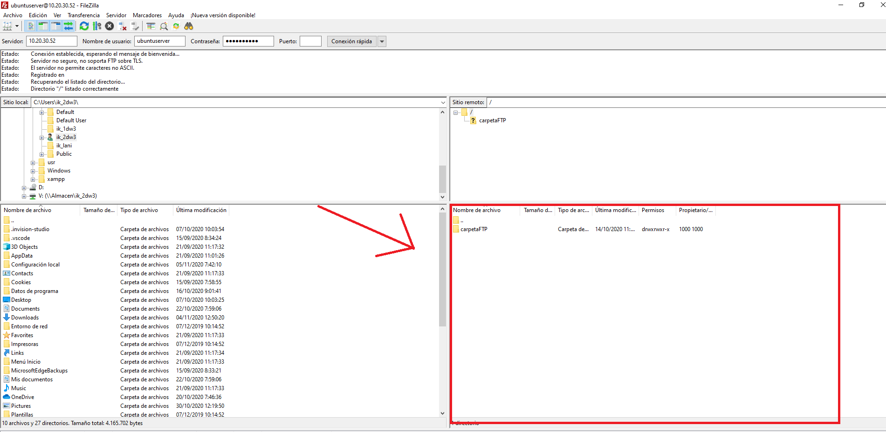

Como acceder al FTP configurado
1. Lo primero que tendremos que hacer es descargar el cliente FTP de fillezilla desde Este enlace.
Una vez instalado y abierto nos aparecera esta ventana
2. Para acceder al FTP tendremos que rellenar los campos solicitados en la parte superior

3. Una vez relleneados todos los datos tendremos que pulsar en conexion rapida
4. Una vez pulsado el boton nos saldra un mesaje que tendremos que aceptar
5. Por ultimo accederemos a la ruta ftp en la que podremos añadir borrar y modificar archivos
